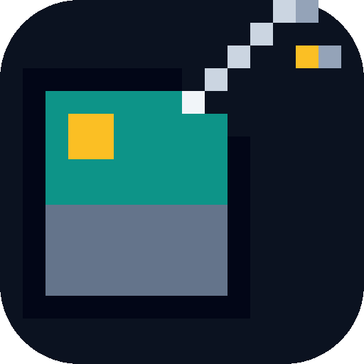
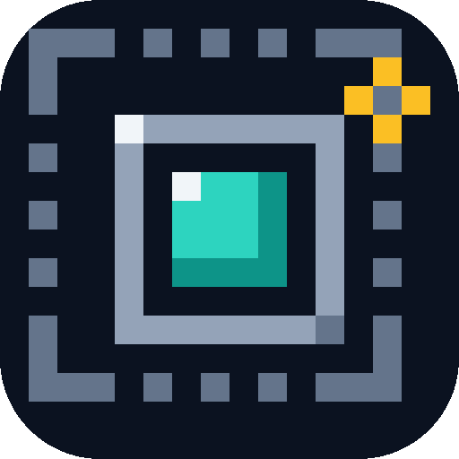
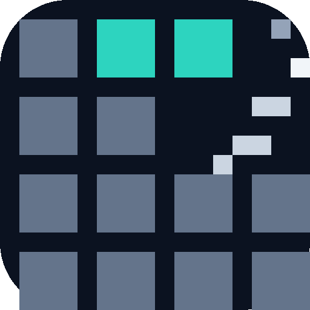
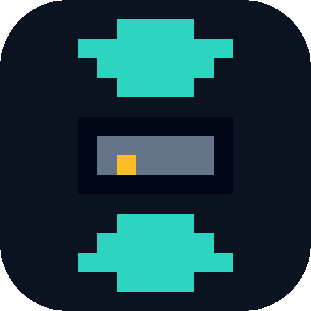
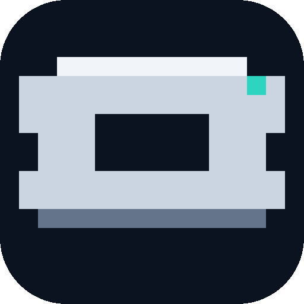
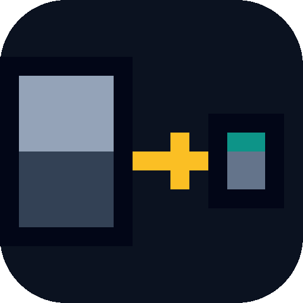

Newer set: 50 pixel-art shaver/bytes propositions (transparent background, classic image-icon colors).
All six proposals are true pixel art now: every mark is a cell on a 16×16 grid
(32px cells, flat palette, hard edges — no gradients, no anti-aliased curves),
so they scale crisply from the 512px tile down to a 16px favicon.
Shared design language: dark tile, slate/steel pixel work, teal + amber accents.
Judge each at 32px and 16px — that is taskbar/tab reality. The grids live in
generate.py; re-run it after editing.
The flagship: a pixel photo card (sun, sky, ground) with its corner shaved off by a steel razor diagonal; the trimmed pixels drift away and an amber spark marks the tip. Most literal "shaving bytes off images" story, and the pixel grid keeps it legible even at 16px.

Recursive compression as pure pixel geometry: a dashed outer frame and a solid inner frame collapsing into a teal core, with an amber chevron kicking inward. Very "product logo"; the chunky dashed ring gives it a distinct retro texture at every size.

The abstract one: a field of pixel blocks with a diagonal bite shaved out, a steel staircase blade along the cut and trimmed blocks floating away. Two teal blocks mark the surviving data. Reads as "image being cut down" even at 16px; strongest pure-pixel silhouette of the set.

Compression as pressure: two chunky teal arrows pressing a tiny pixel photo. The friendliest mark of the set — at 16px it still resolves to arrow + tile, which is the whole story.

A classic safety-razor blade as a pixel badge: light top edge, shaded base, characteristic center slot and side notches, one teal glint pixel. The best monochrome-safe favicon/taskbar shape; on its own it says "sharp", not "shrink".

The result pitch in pixels: a big washed-out frame, an amber arrow, and the same image as a small vivid tile. Tells the value story ("smaller, same picture") best of the set; suited to README headers and mid-size surfaces.
